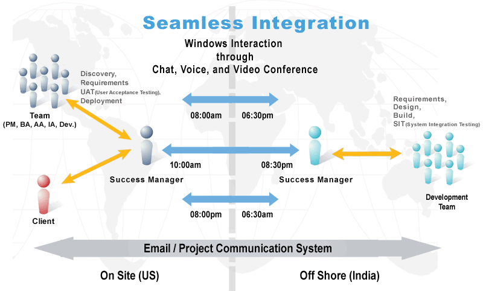
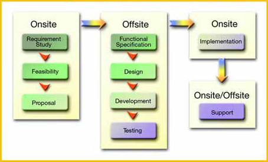
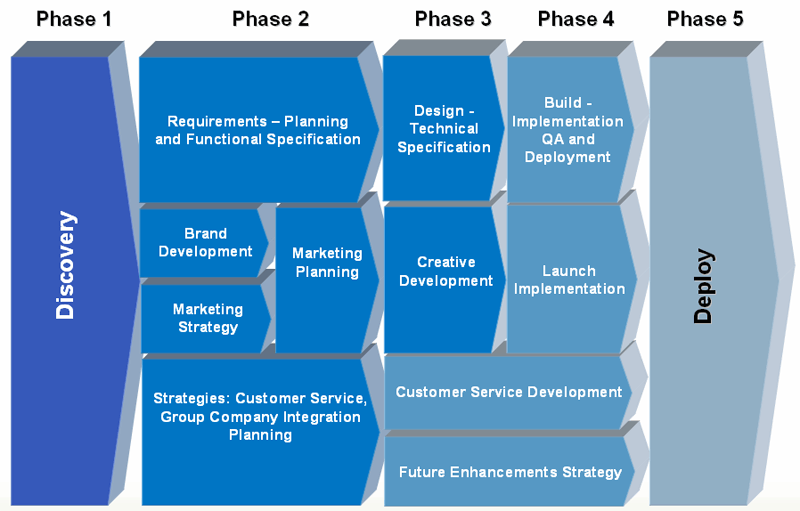
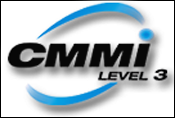
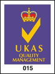

About Us
MARS Telecom Systems is an ISO 9001:2015 and CMMi Level 3 certified company specializing in telecom, networking, and custom software development, delivering high-quality solutions to global clients. With strong R&D expertise, flexible engagement models, and skilled professionals, MARS ensures cost-effective, innovative, and scalable IT solutions that enhance business value and competitiveness.
Company Overview
MARS Telecom Systems (ISO 9001:2015 certified and CMMi Level 3 Appraised) is an established software product development solutions provider and an outsourced development and services partner with deep expertise in the telecom, networking, convergence and custom application development.
MARS offers exemplary software product development and QA services to global clients and our client rely on our proven practices, global delivery models, state-of-art development centers in Hyderabad and Bangalore, India and a talented team of domain specialists ensure that the clients derive optimum return on their IT budgets.
MARS strength lies in our flexible partnering models, talented pool of experienced Software Engineers; flawless project execution and our innovative solutions are focused to augment the business value of our clients. MARS Telecom has managed several global engagements by leveraging its local market knowledge, technical expertise and experience to provide highly competent resources, excellent work culture and world-class infrastructure.
Globally, Corporates are facing challenges in terms of keeping pace with the technology and embracing cost effective newer technologies has become one of the important to strategy to stay competitive. MARS aligns its services, engagements, capabilities to meet these challenges and we believe that by clients enjoy multi-lateral benefits like cost-efficiency, increased focus, speed of delivery and market-worthiness of the products and solutions. With a massive R&D experience: consummate expertise, unique insights, professionalism and commitment to quality is what we bring to the table.
Our Offshore Process Overview
MARS's offshore arm has worked on engagements partnering with teams from the US, Latin America, Middle-East, Europe and different countries in the Asia-Pacific region in delivering solutions for different target groups for specific countries. Working with teams from different countries and cultures has helped MARS develop a process that is flexible and can be adapted to the specific needs of the engagement. MARS understands that the same solution may have to be rendered differently when delivering to a different target audience in a different country. This understanding helps in ensuring that the requirements are well understood for the specific audience(s) and in reducing the time and effort required in sharing this understanding.
MARS has developed an offshore model that has matured over the years, applying the learning from the experiences in various engagements and working with different partners - both service and product companies.
MARS uses processes and tools that address the critical success factors for engagements utilizing the onshore-offshore model.
Largely, two modes of offshore development can be identified - one, in which all of the development is typically handled by a single offshore team and the other, in which development is by distributed teams, usually one onsite and another offshore.

- Requirements are understood through a series of interviews onsite with the client team. These are documented using various aids (use cases/user flows, textual description) and passed on to the offshore team. The offshore team validates their understanding of the requirements and proceeds with the design, build and test.
- Usually, MARS participates in the requirements process and has one or more of its resources available at the client place in the requirements gathering. However, where it makes sense based on the specific engagement, we also work with either the client's representative or partner's team in gathering the requirements, supported by members from MARS's offshore team. In these instances, we establish a clear understanding of how the requirements are captured and ensure that the requirements are well understood by the offshore team before proceeding with the subsequent phases of the development.
- Distributed development - Rightshore Model - A combination of onsite and offshore teams
- We have worked on different engagements (typically larger ones) where development is distributed, with both onsite and offshore teams. Depending on the needs, schedule, skills and the size of the teams, different components are developed by the different teams. The leads/managers are responsible for:
- Ensuring that everyone participating understands the specific needs of the engagement
- Coming up with the schedule and plan for the distributed development
- Managing the integration of the different work products as they are delivered.
Thanks to the extensive experience and effective use of available means of communication, we have been successful in ensuring that the communications among all team members is seamless and virtually instantaneous, in the process significantly reducing time to market when compared to other typical global projects.
MARS's offshore arm has worked on engagements partnering with teams from the US, Latin America, Middle-East, Europe and different countries in the Asia-Pacific region in delivering solutions for different target groups for specific countries. Working with teams from different countries and cultures has helped MARS develop a process that is flexible and can be adapted to the specific needs of the engagement. MARS understands that the same solution may have to be rendered differently when delivering to a different target audience in a different country. This understanding helps in ensuring that the requirements are well understood for the specific audience(s) and in reducing the time and effort required in sharing this understanding.
MARS has developed an offshore model that has matured over the years, applying the learning from the experiences in various engagements and working with different partners - both service and product companies.
MARS uses processes and tools that address the critical success factors for engagements utilizing the onshore-offshore model.
MARS's onshore Engagement Manager will be responsible for the successful management of MARS's responsibilities in any given engagement. This "success manager" will have an offshore counterpart, who is an integral part of the delivery team and has clear responsibilities for project deliverables, is also entrusted with the responsibility of ensuring that the offshore team stays in synch with the client and the onsite team, and consistently delivers quality work. Over the last decade, MARS has developed this concept of "Success Managers" to help in the smooth execution of the engagements in the onsite-offshore model and to render seamless the process of communication between distributed components of the team. The picture above gives an overview of the role and the responsibilities of the success managers.
The onshore success manager is responsible for all client interactions, understanding project requirements, client approvals and sign-offs, change management, onsite team's project schedule and coordination with overall project schedule, issue resolution and overall quality of deliverables from the onsite and offshore team.
The offshore success manager is responsible for gaining a thorough understanding of the project requirements, offshore team's project schedule and coordination with overall project schedule, Issue resolution, change management, quality and timeliness of deliverables from the offshore team, and effective communication between onsite and offshore components.
Overall, between them, the success managers are an integral part of the project team with specific technical responsibilities, with the additional responsibility of ensuring the success of the engagement, thanks to their experience and seniority. Their goal is to stay on top of the progress of the overall engagement and the specific assignments within the project. They manage the schedules of interaction between the two teams and the client. They ensure that the distributed teams stay in sync and the client is up to date on the progress.
MARS has standard processes and tools for Schedule management, Issue Management and Change Control in the engagements that we have successfully executed. A central location on one of our servers is used as a central repository for sharing documents, work products etc. among the client and the teams.
MARS's change management process requires setting up of a change control board with members from the client team and the development team. All change requests are routed to this board. Based on an analysis and prioritization of the requested change, the impacts on effort and schedule are identified. The change control board then deliberates and determines if the requests are to be accepted in the current schedule or in subsequent phases. Once accepted, either a separate statement of work for the changes is drawn up, or addendums to the existing one are prepared and signed off on.
MARS can setup "disconnected" environments for the specific client's engagements. Where required, access to the client's staging and production environments can be through secure VPN access from these environments.
To enable smooth onshore-offshore collaboration, MARS has installed a high-speed broadband connectivity, backed up by dual ISDN connectivity. We also have video-conferencing facility in our offices, which is extensively used to communicate between our global clients and India. This infrastructure ensures that the offshore team is always connected to both the client and the onshore teams. MARS consultants use instant messenger chat, conference chat including voice chat, video conference, phone conferences, web conferences, documents, an online project communication system and email to ensure that everyone on the project team stays in synch.
Tools such as a web-based Project Communication System that integrates most of the above modes of communication (a preview of it is given in the picture below) are used through out the delivery. This tool facilitates seamless access to the project repository and the various tools in an integrated fashion that promotes efficiency and effectiveness in the collaboration between the teams. This, we believe, is a differentiating factor in ensuring success of offshore engagements.
Approach
MARS Model for Offshore Development
Based on the experience we have gained over the years, we have developed an approach to the successful delivery of complex development projects that relies on the right skills at the right place integrated through a robust communication and liaison process. Our approach integrates Onsite and Offshore components to maximize the value received while minimizing the cost and risk.

Onsite
Our Onsite team will work side by side with you at your local office. This team is responsible for gathering your User Requirements and packaging them for delivery to our Offshore team in India. All communication with our Offshore team will be managed by our Onsite team. This reduces the possibility of misinterpreting your requirements and reduces the potential frustration of communicating across time, distance and culture.
The onshore team is also your initial point to go for Issue Resolution. They are committed to your satisfaction and the overall quality of our work.
Offshore
Our Offshore team is the development factory for completing the technical tasks required to meet your needs. Working under the direction of our Onsite team, the Offshore team will assist in design, develop the application/component, configure and test the solution that fulfills your User Requirements. This team is also fully committed to your satisfaction and the overall quality of our work.
In summary, the two groups of teams connected by a common methodology, effective and constant communications, are committed to the success of your engagements.
Phased Approach
MARS utilizes a phased approach to implementing solutions for our clients. There are well-defined milestones and deliverables for each phase. MARS believes in working closely with our clients throughout the engagement and through all the phases of development. The approach that we will adopt for the client will be based on this time-tested methodology and will be customized to the specific needs of this engagement.

Discovery
During the Discovery phase, we try to understand your vision and objectives of the engagement. Often, we are engaged to help our clients to strategize and define the solutions required to meet those objectives.
Requirements
The requirements for the envisioned solution are determined through interviews and interactions with the various stakeholders. We typically schedule interviews and discussions with the appropriate client personnel to validate and confirm the requirements and to uncover specific details and features relating to individual processes and components.
During this phase we will also identify the specific needs for integration with other systems and for data migration, if any. We will work with the client to define the 'acceptance criteria' for the solution to ensure
compliance with the requirements. This definition will be used during final acceptance of the implemented solution. By the end of this detailed requirements phase, we will firm up the technical architecture of the proposed solution and develop a detailed project plan that identifies all the tasks and the resources.
Design
Based on the detailed requirements and the technical architecture identified, we will develop the detailed design specifications for the solution. We will also identify any specific hardware, software, networking needs, sample data and test instances for systems with which the solution will need to integrate.
At the end of this phase, a programming guideline document will be created that will define the approach to application coding. We will also update the project plan with the specific tasks and resources required for the build phase.
Build
During the Build Phase, we will develop the solution based on the design specifications. This will include the database as per the data model developed during the Design Phase.
In this phase, the developed components are tested individually and then integrated. The integrated system is completely tested for functional compliance with the requirements.
As part of this phase, we identify the relevant milestones such as unit testing, integration testing, and delivery for QA and testing by the client's IT team. The project plan will identify junctures for controlled release(s) of the solution modules for QA and testing, to ensure effective testing, review, feedback and fixes, each step designed to ensure that the final deliverable meets the project requirements.
Deploy
Once the various modules have passed through QA and testing, we will support the client through the integration, QA, testing, acceptance and deployment process, based on the criteria defined by the client.
Project Delivery Setup:
Based on our experience in executing Enterprise scale engagements, we recommend a 3-tiered setup consisting of the following environments.
- Development Environment
- This is the environment in which all the development takes place. The Development team deploys the application on the Development server, tests it and prepares it for deployment on the Staging server.
- Staging Environment
- This environment is identical to the Production environment and is primarily used as an approval bed from the client. All the code from the Development server is moved to the Staging Server. The client verifies and validates the implemented functionality and also approves them before moving it to Production.
- Acceptance typically happens in this environment
- Production Environment
- This is the "Live" environment where the application will be hosted.
- This is the environment where all the final code will be deployed from the Staging environment.
The process recommended is very strict and is intended to ensure that the "Live" environment is not corrupted accidentally. The Production server is never updated directly from the Development environment. Any updates to the application will be first hosted on the Staging environment for verification and, once approved the code is moved by the client IT team from the Staging servers to the Production servers.
In this case, given that development will primarily take place off-shore in India and given the other security and connectivity concerns, we propose the following approach.
A development environment will be established at MARS development center in India and the staging/test environment at the client. During the course of the project, when the editions have been developed, tested and deemed ready for review by the client, we will create a VMware image of the entire application and post it via VPN to the staging environment. The client will review the application on the staging server and provide us feedback. MARS will deliver the appropriate updates via VPN. During the maintenance phase, every release will follow a similar process.
Infrastructure
Located in prime areas in the cities of Hyderabad and Bangalore. Our offices occupies a convenient position with quick access to the Airport, Govt. offices, Hitec City etc. Spread across two locations in Hyderabad our office space is capable to host 300 + employees. Besides space reserved for offices, employees have access to recreational areas, underground parking lot and medical facilities, all completely secured and supported by state-of-the-art security and infrastructure.
- Badge access control for all rooms
- Fire and Smoke detectors throughout the building
- 24hrs guarded location
- Adequate Fire extinguishing system
- Optimal blend of PSTN, ISDN /BRI (public telephony network) and LAN telephony
- Primary Internet Service provider - Among India's Leading ISP's with 99.96% uptime
- Back-up carriers ISDN with automatic switch over
- Dual Link Facility of Primary Link being RF and Secondary being ISDN for auto fall situation. ( to be upgraded from ISDN to Leased Circuit Shortly)
- State of Art Firewalls, routers, Stacked switches with infrastructure-wide redundancy
- 200KVA diesel generator, providing emergency power to the building for 7 days continuously
- 80KVA UPS
- Fully automated switch over
- Dedicated UPS for Servers and critical equipments
- Scalable Data center with racks from top vendors, Servers, Firewall Redundant AC
- Cat6 Structured cabling and Patch panels from to house close to 400 ports.Gigabit Backbone from the Edge Switches to the Aggregation Switch which Links to the Core using the MM Fiber Cable for both Data and Voice.
- The Core Switch is a 24 port Full Layer-3 Switch which is backed by the Redundancy with the feature of XRN (eXtended Resilient Network) which does the Dynamic Link Aggregation (DLA) Dynamic Management (DM) and Dynamic Routing.
- The Internal Router Forwards the Traffic to either the Firewall or the VPN Router based on the destination. If it's a internet traffic it goes to Firewall and Gateway Router and if its an intranet traffic its passed on to VPN Router which does the encryption before passing on to the destination thru site to site VPN transparent to the user.
- Provided with the 4 ports well defined with color coding for Work Environment, Desk phone, development and a Spare. The same policy has been adopted throughout at every of the workstation.
- Every User has 4 UPS power point at their disposal.
- A dedicated Lab has been designed such that at no point of time the Local Lab traffic is going to affect the Core Network traffic. Groups of users have been allocated a network Segment to overcome the shortage of IPs and every user is linked thru his / her Edge Switch to the Modular Chassis based Gigabit Multilayer Switch.
- Branded top class Servers with Dual Processor, Redundant Memory and RAID for DATA Security with Dual SMPS.
- Technology ready - branded Desktops with good hardware configuration. Maintaining Strict SLA's for Service and Support.
- State of the art Tape drive connected with SCSI 320.
Quality Policy
We aim:- To partner in software product development and deliver cost effective products on time fulfilling contractual obligations.
- Update and improve our systems, procedures and technologies according to the needs and requirements of our internal and external customers.

MARS Telecom Systems has been awarded International Organization for Standardization (ISO) 9001:2015 certificate by NQA - UK accredited to UKAS - UK. The award follows an independent audit of MARS Telecom Systems' operations, management and quality systems. With this certification, MARS has demonstrated its ability to provide software product develoment services that meet and exceeds customer requirements.

Scope
The scope of the certification includes "Design, Development, Implementation,Testing, Delivery and Support of Software Products and Services".
Quality Policy
We are committed to provide our clients effective Software Design and Development services through consistent processes, innovations, improvements thereby exceeding our clients' needs and expectations.
Job Opportunities
Position : Senior Software Developer - JAVA Job Location : Hyderabad Company : MARS Telecom Systems Private Limited Education : Bachelors' Degree in Computer Science Experience : 6 + years of software development experience Experience : 3+ years of software development experience in cloud based, multi-tiered, enterprise application systems in Java technologies. Experience : Experience working with C#/.NET is a plus Experience : Experience of the following is highly desirable: JAVA 1.7 & higher, Any messaging system, JBoss/Wildfly server, Tomcat, Linux, HTTP, SOAP/REST Web Services, XML, JSON Experience : Experience in working on EJBs and the web layer, Spring Framework, Maven
Job Description :
- Strong understanding of Algorithms and Data Structures.
- Prior experience on developing micro-services and successfully built products using SOA
- Experience in using a system integration middleware for API management and multi-point integrations
- Strong understanding of Algorithms and Data Structures.
- Good experience with Java Unit Testing Frameworks and Tools such as JUnit, TestNG, Mockito etc.
- Experience in using a system integration middleware for API management and multi-point integrations
- Good experience with Java Unit Testing Frameworks and Tools such as JUnit, TestNG, Mockito etc.
- Strong and demonstrable experience working in design and development of public facing & private REST APIs
- In-depth knowledge of PL/SQL, stored procedures, schema design in large scale relational databases such as Oracle, MS SQL. Nosql database design and optimization experience is a plus
- Strong and demonstrable experience working inacc continuous integration and continuous deployment systems (CICD)
- Ability to work both independently and as a team player
- Experience and understanding of software source control systems, preferably Git
- Good understanding & working experience in cloud computing platforms such as Amazon cloud, Azure Cloud is a plus
Career Overview
MARS is a top-notch IT services company with over 10 years experience and is one of the fastest growing companies in INDIA. MARS offers a full range of IT services and industry specific solutions to help clients take advantage of opportunities. Our culture and work environment motivates every MARSian to go beyond their defined roles and excel in their individual capacities. We provide MARSian with the opportunities to exercise their responsibility, integrity and creativity while developing themselves, their careers, and our business. We have been able to deliver leading-edge solutions consistently to our clients by bringing together highly talented people in a creative and collaborative environment.
Delivering unique value to our customers, driving growth and managing our business efficiently have been the result of our extraordinary teamwork. We are committed to helping all of our employees develop their skills through extensive training support as well as ensuring that we engage them in a two-way dialogue about their career development and the employment opportunities.The technical excellence of our services can only be delivered by the most highly qualified and dedicated team of people on who we rely to keep our customers happy and to help grow our business. We have nurtured new technological strengths and enhanced domain expertise. All these achievements have boosted our position to look forward to bigger and more challenging roles in the journey ahead.
MARS is an Equal Employment Opportunity employer. We promote and support a diverse workforce at all levels in the company. All qualified applicants will receive consideration for employment without regard to race ,religion,color,sex,age,national origin or disability. All applicants will be evaluated solely on the basis of their ability , competence , and performance of the essential functions of their positions. We welcome employees of all backgrounds and passions, and place a high value on the unique perspectives that make up MARS. Together we believe in working hard, having fun, and celebrating our achievements. We support you to grow and make you better at what you are; as well as help you ‘know’ yourself as a professional.
We would like to hear from talented individuals who would like to work at MARS. We will keep your CV on record for 6 months and contact you if a relevant position becomes available.
Working @ MARS
Freedom to work across Domains:
At MARS, we have established an environment that focuses on individual talent and interests. As a proven practice, we promote cross-domain experience that provides you with opportunities to function across different industry verticals, service practices, and functional domains as well as varied technology platforms. While all these factors help hone your skills across platforms, they also offer customers a talent pool with expertise that exceeds their industry benchmarks; at the same time, they continuously present you with the opportunity to explore the domain where you believe you would fit the best.
Culture:
People from diverse backgrounds and geographies have come together in pursuit of a common vision. At MARS our culture supports not only the work that we do, but also our people. At MARS, we welcome, value, and respect every employee. And we listen. Each of us is responsible for upholding and fostering a culture that is inclusive, ethical, and supports our corporate vision and goals. We promote a work environment in which we learn from one another. And we take full advantage of our differences to build and deliver better solutions, products, and services to our customers.
Open door policy:
Our corporate culture is open and inclusive; irrespective of your experience, you will immediately be welcomed into the team, and would always have a significant role to play.
On-the-job learning:
Intense training and development programs facilitate on-the-job learning.
Mentor programs:
Our mentor programs foster supportive relationships that help develop skills, behavior, and insights to enable you to attain your goals.
Awards & Rewards:
Recognition programmes aren’t mere processes but a powerful tool to reinforce key outcomes our associates create for our businesses. As an organization we strongly believe that when we recognize people, we reinforce their actions and behaviors. Rewards & Recognitions at MARS have always been key engagements with a gargantuan reach.